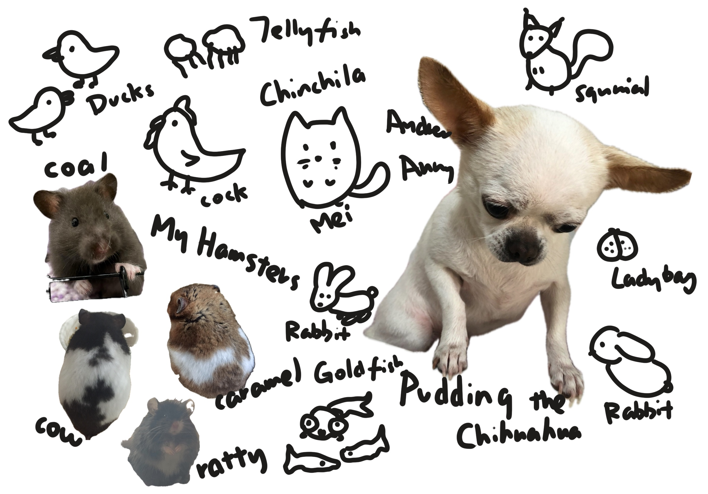

From the South West part of China to the largest city in the State, Minnie visited each zoo and aquarium she could. Now she's inviting you to travel along her way to find out the beauty of wildlives and the beautiful creatures on this blue planet.
Beauty Of Nature
From a very young age, Minnie loves to keep pets, all kinds of pets, you name it, she raised it. Check out her childhood buddies below!

Since then, Minnie started her journey traveling around the world to visit the zoos and wildlifes, she been to a few places but unfortunately some of the pictures are missing.
Singapore Zoo
Minnie once went to the Gorilla House when she was a child and fell in a yellow raincoat on a rainy day at the gate, and her butt hurt.
Ocean Park Hongkong
Minnie went there at a very young age, so that now she only remembers that her mother bought herself a large sea lion in a sailor suit, and Minnie didn't like the it.
New York Zoos
Minnie decided to tell you about this later.
New York Aquarium
Minnie said this will be something you can explore later on.
Back To Nowadays
Since her college, Minnie moved to New York City and restart her journey life here, she uses every single vacation and day off to visit the animals around her, and now she's trying to bring you to the place without moving a single leg. Isn't That good?